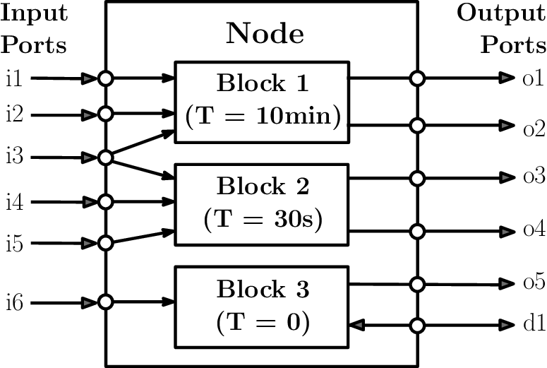
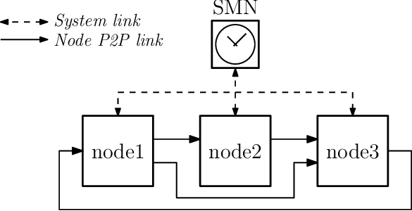
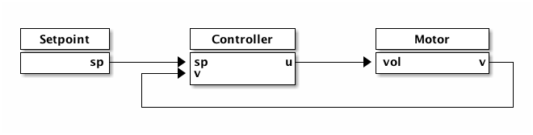
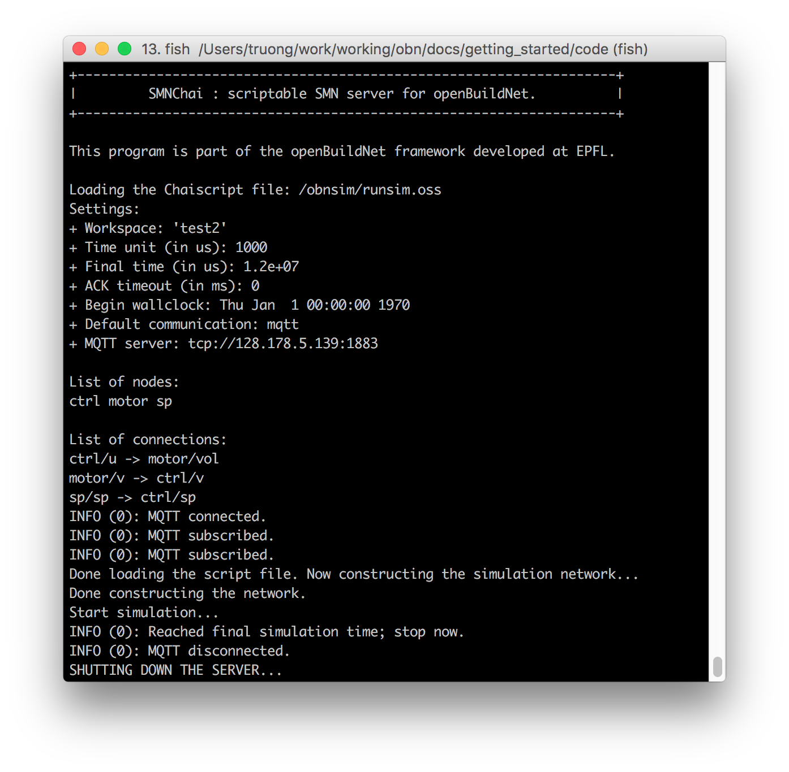

Getting Started with OpenBuildNet
Docker-based Distribution
Table of Contents
- 1. Introduction
- 2. Installation
- 3. Overview of OpenBuildNet Architecture
- 4. Tutorial: Control System Simulation
- 5. Notes on simulation performance
- 6. Developing nodes with OpenBuildNet Docker images
- 7. Customize OpenBuildNet Docker Images
- 8. Appendix
1 Introduction
OpenBuildNet is an open-source framework for distributed co-simulation, where specialized and sophisticated simulation tools in various fields are incorporated in a common platform to study the interdependencies between the subsystems. The main goal of OpenBuildNet is to provide a framework and software tools for large-scale distributed co-simulation of complex systems, with intended applications in smart energy systems such as smart buildings, power grids, and optimization-based controllers. Most of the time, such co-simulation systems are heterogeneous, which involves subsystems of different types and on potentially vastly different time scales. For example, a smart grid simulation may contain buildings, which have very slow thermal dynamics and fast electrical system dynamics, and the power grid with a very fast sub-second time scale. Furthermore, subsystems come in different forms and sizes: from large and highly sophisticated simulators such as EnergyPlus, to moderately complex controllers prototyped in Matlab or Python, to simple rule-based controllers implemented in C. OpenBuildNet aims to support simulation systems composed of many heterogeneous sub-simulators distributed over multiple networked computers. It allows integration of specialized or legacy tools into the co-simulation to lower the barrier for adoption and reuse their industrial-strength, highly developed functionality.
OpenBuildNet targets researchers and engineers in control, optimization, and computer science, who wish to apply their expertise and techniques to smart energy systems. With OpenBuildNet, researchers and engineers can comfortably implement large-scale heterogeneous co-simulations from within their familiar scientific computing environments and languages such as Matlab and Python.
2 Installation
With the Docker-based distribution, it is quick and easy to start using OpenBuildNet. It is also easy to deploy an OpenBuildNet simulation onto any computers running major operating systems such as Linux, Windows, and Mac OS, or onto a cloud computing service such as the Amazon Elastic Compute Cloud (EC2).
2.1 Prerequisites
We will assume that the user is familiar with the Docker technology, understands the terms container and image, and knows how to run and manage Docker containers. If these sound unfamiliar to you, it is necessary to get acquainted with Docker by following the introduction and tutorial on the Docker website. The user must also be comfortable with using the terminal and writing and running commands at the terminal prompt. In this tutorial we will demonstrate the steps in a Unix-like environment (such as Linux and Mac OS), however it is straightforward to translate the commands into Windows.
2.2 Docker installation
A recent version of Docker must be installed on any computer that needs to run the Docker-based distribution of OpenBuildNet. Follow the instructions on the Docker website to install Docker on your system.
2.3 Pull the Docker images of OpenBuildNet
The Docker-based distribution of OpenBuildNet consists of several pre-built images. Each image targets specific uses. This is to keep the size of the packages small because a complete OpenBuildNet package for all language interfaces and all applications (e.g., EnergyPlus) will be huge. This also aligns with the layer-based architecture of Docker images. Based on the need of the user, appropriate images should be pulled to the user's system. The Appendix lists all currently available Docker images for OpenBuildNet.
In this tutorial, we will need the base image and the Python interface, hence we will pull these two images from the Docker hub by executing the following two commands in the terminal.
$ docker pull nxtruong/obnbase $ docker pull nxtruong/obnpy:2.7
2.4 MQTT Broker
OpenBuildNet requires a messaging framework for the communication between nodes.
Currently, only MQTT is supported by the Docker-based distribution.
An MQTT broker is therefore needed to be available and accessible by all computers running the simulation.
For the purpose of this tutorial, a local MQTT broker running on the same computer will suffice.
However, for distributed simulations running on multiple computers, a broker running on the local network, or a public broker on the Internet, is necessary.
If you already have an MQTT broker available (let us call the complete IP address of the broker as MQTTBROKER), you can skip the rest of this section.
There are several options to make an MQTT broker available for this tutorial.
- Use a public MQTT broker on the Internet, for example:
tcp://test.mosquitto.org:1883. This is the easiest way but also the slowest and most unreliable way because the public broker is usually overloaded. Use this only for testing, not for final deployment and simulation runs. - Run a dedicated MQTT broker on the local network. This requires the installation of an MQTT broker such as Mosquitto on a local computer which can be accessed from other computers on the network. On Mac, one can use Homebrew; on Linux, mosquitto is available on most official repositories (Debian, Ubuntu, etc.); on Windows, a binary installation is provided on Mosquitto's website. This is the fastest and most reliable option.
- The OpenBuildNet base image includes Mosquitto. One can start the broker in a container and expose the MQTT port so that other computers can access it. If all nodes run on the same machine, a default bridge network between the containers can be used and the MQTT port does not need to be exposed. This option does not require any installation, is reliable, but slower than the previous option because of the Docker's network emulation.
In any case, we will use MQTTBROKER to denote the complete IP address of the MQTT broker.
The next subsection details the steps to start the built-in Mosquitto broker in the OpenBuildNet base image (the last option above).
2.4.1 Using the built-in MQTT broker
Open a terminal window and run the following command:
$ docker run -d --name mqttserver nxtruong/obnbase start_mqttserver
This starts an MQTT broker in a container named mqttserver as a daemon (service). The prompt will return immediately, however the container is still running in the background.
Obtain the IP of the broker by running the following command in the terminal:
$ docker inspect --format '{{ .NetworkSettings.IPAddress }}' mqttserverThis prints out the IP address of the container mqttserver. Append the IP with the port number
:1883and prepend it withtcp://to getMQTTBROKER. For example:tcp://172.17.0.2:1883.
Because the built-in MQTT broker is running in the background, we should stop it when it is not needed anymore. In any terminal window:
$ docker stop mqttserver $ docker rm mqttserver
The first command stops the container; the second command deletes the container. Note that a stopped container still exists and uses disk space in the system, until it is removed.
3 Overview of OpenBuildNet Architecture
This section briefly describes the architecture and the most important concepts of OpenBuildNet from the users' perspective.
3.1 Nodes as the Building Blocks
A distributed co-simulation in OpenBuildNet is a synchronous simulation distributed to multiple computation nodes. The nodes run their own local simulations in parallel, which are synchronized and driven by a global clock at discrete time instants. A global synchronization mechanism is required because nodes, as sub-simulators, often realize dynamical systems with differing sampling rates and computation speed. This heterogeneity and multi-timescale nature is particularly typical in the target applications of OpenBuildNet in large-scale energy systems.
OpenBuildNet considers the node model illustrated in Figure fig:node-model.
Nodes exchange data with other nodes through ports.
The ports of a node represent its abstract interface to the external environment.
A physical port is a port whose data exchanges are synchronized and strictly managed by the global clock.
As a result, a physical port is either an input or an output exclusively.
In contrast, a data port is not synchronized nor managed by the global clock and can possibly be bidirectional.
Each node and port must have a unique valid identifier, which is a sequence of alphanumeric and the underscore (``_'') characters and may only begin with a letter.
For example, input port i1 in Figure fig:node-model is uniquely identified by Node/i1.
Because in practice a node may consist of multiple subsystems, it is functionally divided into computation blocks (or blocks for short). For instance, a building node may simulate both the fast electrical system dynamics and the slow thermal dynamics as two blocks. A block is essentially a computation unit that may read certain inputs and may compute the values of certain outputs of the node containing it. This computation is triggered either periodically at a sampling time associated with the block, or non-periodically by requests during run-time, or both. Each block must have a non-negative sampling time. The blocks of a node may have different sampling times. For example, the node illustrated in Figure fig:node-model has two periodic blocks and a non-periodic block (\(T=0\)). Note that in this case, block 3 can only be triggered by non-periodic execution requests.

Figure 1: Model of a node in OpenBuildNet with physical input (output) ports depicted on the left (right) and a data port. Blocks 1 and 2 are executed every 10 minutes and 30 seconds respectively, block 3 is non-periodic.
3.2 Distributed Network of Nodes
A simulation system is therefore a network of nodes connected in a certain topology. In OpenBuildNet a system node, called the System Management Node (SMN), synchronizes the computation of all other nodes and drives the entire simulation. As its name suggests, it also manages the entire node network besides running the simulation, e.g., adding nodes to the network and handling system errors. Every node must connect to and communicate with the SMN in order to participate in the co-simulation. This architecture is illustrated in Figure fig:node-network.
Nodes can be distributed across multiple computers over a communication network (possibly the Internet). Furthermore, nodes exchange data with each other through their ports and direct peer-to-peer links, i.e., their communications are not routed through the SMN. This decentralized architecture reduces the communication overhead and helps OpenBuildNet scale up without difficulty.

Figure 2: OpenBuildNet network of nodes: the SMN manages the entire network and coordinates the co-simulation through system communication connections with the nodes (dashed lines). Nodes communicate directly with each other through their ports and peer-to-peer communication links (solid lines).\vspace{-12pt}
3.3 Execution and Synchronization
The execution of a block of a node is split into two stages. In the first stage, called output update, the block computes and sends out its outputs. This computation may depend directly on the current values of certain inputs; in that case the block is said to have direct feedthrough from those inputs. In the second stage, called state update, the block updates its internal states.
OpenBuildNet blocks are loosely coupled and only their boundary states are synchronized during the output update stage at discrete-time steps, by exchanging data through their input and output ports. This synchronization mechanism is controlled by the SMN via system messages. The interdependencies between blocks determined by their direct feedthrough properties and the system topology define a partial order between them at any time instant. The SMN enforces the relative order between blocks by issuing system messages in a precise order decided by a graph-based algorithm. It also detects algebraic loops, situations in which two blocks have circular dependency between them and their synchronization cannot be resolved. Blocks that have no relative order between them can be executed simultaneously and hence enjoy the computational speed-up benefit of distributed computation.
Details on the synchronization mechanism of OpenBuildNet can be found in the technical documents on our website.
4 Tutorial: Control System Simulation
In this tutorial, we will develop an OpenBuildNet simulation of a control system in Python. The tutorial illustrates the most important and commonly used concepts and features in implementing OpenBuildNet nodes and simulations.
4.1 The control system
We will implement a control system depicted in Figure fig:control-system. This is a simple feedback control system of a DC motor model. Note that the focus of this tutorial is on the OpenBuildNet simulation implementation, not on the control design of the system.

Figure 3: Block diagram of the control system in the tutorial.
The system consists of three nodes: a motor node (the plant), a setpoint node, and a controller node.
- Setpoint node: this node sets the velocity setpoint. It has a single output
spwhich is the setpoint value, and no input. It changes the setpoint randomly every 4 seconds, therefore its sampling time is 4 seconds. - Motor node: this node implements the motor's dynamics. It has one input
volwhich is the input voltage and one outputvwhich is the velocity. The motor's discrete-time dynamics are given by the state-space equations \(x_m(t+1) = A_m x_m(t) + B_m vol(t)\) and \(v(t) = C_m x_m(t)\), where \(x_m \in \mathbb{R}^2\) is the motor's state vector, \[ A_m = \begin{bmatrix} 1.511 & -0.5488 \\ 1 & 0 \end{bmatrix}, \quad B_m = \begin{bmatrix} 0.0625 \\ 0 \end{bmatrix}, \quad C_m = \begin{bmatrix} 0.03294 & 0.02697 \end{bmatrix} \] and with sampling time of 0.1 second. - Controller node: this node implements the controller. It has two inputs:
spreceives the setpoint from the Setpoint node andvreceives the velocity feedback measurement from the Motor node. It produces one output:uis the control command to the motor in the form of the input voltage. The controller implements the discrete-time equations \(x_c(t+1) = A_c x_c(t) + B_c (sp(t) - v(t))\) and \(u(t) = C_c x_c(t)\) where \(x_c \in \mathbb{R}^3\) is the controller's internal state vector, and \[ A_c = \begin{bmatrix} -0.82 & 1.0 & 0.82 \\ 1 & 0 & 0 \\ 0 & 1 & 0 \end{bmatrix}, \quad B_c = \begin{bmatrix} 32 \\ 0 \\ 0 \end{bmatrix}, \quad C_c = \begin{bmatrix} 12.62 & -19.75 & 7.625 \end{bmatrix} \] The sampling time is also 0.1 second.
4.2 Design of the OpenBuildNet simulation
The system will consist of three nodes as described above and in Figure fig:control-system. The inputs and outputs of each node are also illustrated in the figure; we will use the same names for the ports. In this system, all ports send and receive scalar values. Each node implements a single computation block. Note the difference in the sampling times between the setpoint node and the other nodes.
It is worth noting that there is no direct feedthrough in the controller and motor nodes.
Take the controller node for example.
Its output u solely depends on the controller's state \(x_c\) but not directly on the inputs sp and v, as evident from the equation \(u(t) = C_c x_c(t)\).
However, for the sake of illustration, we will impose that there are direct feedthroughs from both sp and v inputs to the output u.
4.3 The setpoint node
The setpoint node is the simplest one in this example.
We will implement it in Python, using a scripting style which constructs an OBNNode object, creates ports on this node object, then assigns callbacks to various events of the node and runs the simulation of the node.
The complete Python code is in the file nodesetpoint.py.
Below is the step-by-step explanation of the code snippets.
We first import the necessary libraries.
from __future__ import division, print_function import numpy as np import sys from obnpy.obnnode import *
We then define the variables for the node object and the current setpoint value.
node = None # This will be the node object setpoint = 0.0 # The current setpoint value
Two callbacks are then defined for the node:
- The initialization event is triggered only once when the node is initialized at the beginning of the simulation. The function
initNodeis the callback for this event, which simply initializessetpointto 0. - The block output event is triggered whenever the outputs of a specific computation block need to be computed. Note that output ports with updated values will be sent out automatically after the event, so it is not necessary to explicitly send them over the network. In its output callback
outputSetpoint, the node will randomly choose a new setpoint value between -100 and 100, then set the output portspto this value. The dictionary propertyoutput_portsof a node object returns a port object, on which the methodsetis called to set the port's value.
def initNode(): # Init callback
global setpoint
setpoint = 0.0 # Reset the setpoint value
def outputSetpoint(): # Change and send the setpoint
global setpoint, node
setpoint = np.random.randint(-100, 101) / 10.0
node.output_ports["sp"].set(setpoint)
The main function is to construct and run the node. We allow a command-line argument to set the MQTT server address, which defaults to a local host.
def main():
if len(sys.argv) < 2:
server = 'tcp://localhost:1883'
else:
server = sys.argv[1]
The node object is then created with OBNNode(name,workspace,server) where name is the node's name ("sp" for this node), workspace is the workspace name (more on this below), and server is the MQTT server address.
global node
node = OBNNode("sp", "test2", server) # Create a node
OpenBuildNet allows multiple simulations to run concurrently, which are distinguished by their names (or workspace names).
Even if a single simulation is run, it is generally a good idea to give it a name.
The workspace argument above sets the name of the workspace / simulation in which this node will run.
It is possible to use an empty string as the workspace name.
Next, an output port named sp is created on this node, whose type is a double scalar (i.e., a real number).
The other options for the container type are "vector", "matrix", and "binary" (any binary data), while the other data types include "bool", "int32", "int64", etc.
node.create_output("sp", "scalar", "double") # The setpoint output
The initialization callback is then assigned. We also assign a callback for the termination event, which is triggered when the simulation is terminated. In this case, a simple lambda function is used as the callback.
node.on_init(initNode)
node.on_term(lambda: print("Setpoint node terminated."))
As mentioned earlier, a node may contain multiple computation blocks, each of them must have a unique identification number.
Currently, the eligible range for block IDs is from 0 to 63.
Here, there is only one block, with ID = 0.
The function outputSetpoint defined earlier is set to be the output callback for this block.
MAINBLOCK = 0
node.on_block_output(outputSetpoint, MAINBLOCK)
All methods for assigning callbacks accept additional arguments after the required ones, which will be given to the callback functions as user arguments. For example, had the above statement be
node.on_block_output(outputSetpoint, MAINBLOCK, "user args")
then the callback function would have been called as outputSetpoint("user args").
Finally, the node is run, ready to join the overall simulation.
A timeout value in seconds can be given to the run method, which sets the duration for which the node will wait during its interactions with OpenBuildNet before it times out.
The default timeout value of \(-1\) tells the node to never time out.
It is a good idea to set a finite timeout value just in case there is an issue with the communication network or with OpenBuildNet.
However, this timeout value must be long enough to account for possible network latencies and the computation time of the other blocks.
print("Ready to run the setpoint node; please start all other nodes ...")
status = node.run(60)
print("Simulation stopped with status = {}".format(status))
The run method returns a status code.
A status code of 2 means the simulation was successful.
Other values have different meanings (e.g., the node has timed out).
4.4 The plant node
The plant node is more complex than the setpoint node as it has both input and output ports, internal states, and more complex computations.
For complex nodes, it is recommended to subclass OBNNode to encapsulate the internal data and properties of the node object, rather than relying on global variables.
This is illustrated in the implementation of the plant node, whose code can be found in the file nodemotor.py.
The definition of the class Motor is reproduced below, which is similar to the code of the setpoint node.
The main difference is that the callbacks are wrapped in a subclass and the node's construction is in the class' constructor.
class Motor(OBNNode):
"""Node that implements a DC motor model."""
def __init__(self, workspace, server):
OBNNode.__init__(self, "motor", workspace, server)
self.create_input("vol", "scalar", "double") # Create voltage input
self.create_output("v", "scalar", "double") # Create velocity output
MAINBLOCK = 0 # There is only one block in this node (the motor's dynamics)
self.on_init(self.initCallback) # assign callback to initialize the node
self.on_term(lambda: print("Motor node terminated.")) # simple callback for node's termination
self.on_block_output(self.motorOutput, MAINBLOCK) # callback to send output
self.on_block_state(self.updateState, MAINBLOCK) # callback to update the motor's states
# Initialize the system's matrices
self.A = np.array([(1.511, -0.5488), (1.0, 0.0)])
self.C = np.array([(0.03294, 0.02697)])
def initCallback(self):
self.x = np.zeros(2) # Reset the state vector
self.output_ports["v"].set(0.0) # Initialize the output (not necessary)
print("At {} simulation started.".format(self.sim_time()))
def motorOutput(self):
v = np.dot(self.C, self.x)
self.output_ports["v"].set(v[0]) # Set the output value
def updateState(self):
v = self.input_ports["vol"].get() # Get the input voltage
self.x = np.dot(self.A, self.x)
self.x[0] += 0.0625 * v
It is important to highlight two details in the above code.
- To access an input port on a node, use the property
input_ports, for exampleself.input_ports["vol"]. To get the current value of a port, use the methodget, e.g.,self.input_ports["vol"].get(). For vector and matrix ports,get()returns the data in the appropriate NumPy types. - A computation block also has a state update event, which is triggered at the end of the current simulation time step, after all outputs have been sent and all necessary inputs have been received. The purpose of this event is to update the internal states of the node with respect to the current input values. A state update callback should not send output values. In the case of the plant node, the state update callback is where the motor's states are updated according to the state equation.
4.5 The controller node
The controller node is similar to the plant node because it also implements a state-space model.
Its code is in the file nodectrl.py.
Besides computing the controller's output and states, this node also records its inputs, output, and states at each time step in a file named controller.txt.
Fragments of the logging code can be found in the initialization callback, the state update callback, and the termination callback.
4.6 The simulation script
Once all nodes have been implemented, a simulation script is needed to declare the nodes to OpenBuildNet, connect the ports, and run the actual simulation.
The simulation script can be found in the file runsim.oss.
OpenBuildNet currently uses the Chaiscript scripting language, which is similar to Javascript, for its simulation scripts.
There is a plan to switch to Python as the simulation script language.
4.6.1 Simulation setttings
The script first sets some system settings for the simulation, including the workspace name, the atomic time unit (defaults to one microsecond), the final simulation time (defaults to infinite), the communication framework (defaults to MQTT), and the MQTT server address (defaults to the local host).
workspace("test2");
settings.time_unit(millisecond);
settings.final_time(12*second);
settings.default_comm("mqtt"); // Can change the default communication
settings.MQTT_server((args.count("mqtt")>0)?args.at("mqtt"):"tcp://localhost:1883");
Note that here the MQTT server address can be specified in the command line when the simulation script is executed.
4.6.2 Node declarations
Next, each node is declared to OpenBuildNet. The following details are required or usually provided.
- name : the unique name of the node.
- inputs : the list of input ports' names (defaults to empty, ie., no input ports).
- outputs : the list of output ports' names (defaults to empty, ie., no output ports).
- blocks : the list of computation blocks. Each block is defined with the following properties.
- sampling : the sampling time of this block.
- inputs : the list of direct-feedthrough inputs to this block; a logical value can be provided to specify which port has direct-feedthrough (true) and which port does not (false). This list defaults to empty, i.e., no direct-feedthrough inputs.
- outputs : the list of output ports of this block, which defaults to empty, i.e., no output.
- id : the ID number of the block. If this property is omitted, the blocks' IDs are automatically assigned increasingly from 0.
- name : optional name of the block.
For example, the plant / motor node is declared as following.
var motordef = ["name" : "motor", "inputs" : ["vol"], "outputs" : ["v"], "blocks" : [["sampling" : 100*millisecond, "outputs" : ["v"]] ] ]; var motor = node(motordef);
Compare this definition to section "The control system" to see how it reflects the properties of the plant node.
The statement var motor = node(motordef) adds the node's declaration to the OpenBuildNet simulation system.
The controller and setpoint nodes are declared similarly.
There is one minor difference for the setpoint node.
Because this node does not need the state update event, we declare the node without adding it to OpenBuildNet by (note the false argument, which tells the function not to add the node to OpenBuildNet immediately)
var sp = node(spdef, false);
We then specify that the node does not need the state update event updateX and manually add it to OpenBuildNet.
sp.need_updateX(false); add_node(sp);
Remark: although it is a good practice to specify whether a node needs the state update event, it is actually not required. If a node does not define a callback for the event, the event is simply ignored.
4.6.3 Port connections
After nodes have been declared, their ports can be connected using the connect function.
The syntax is straightforward: connect(source_node.port("source_port"), target_node.port("target_port")).
In this example, three connections must be established as following:
connect(sp.port("sp"), ctrl.port("sp"));
connect(motor.port("v"), ctrl.port("v"));
connect(ctrl.port("u"), motor.port("vol"));
Consult Figure fig:control-system to justify the above connections.
4.6.4 Model export
Once all nodes and connections have been established, the system configuration may be printed out to the console by the command print_system().
This is useful to verify the correctness of the system configuration.
It is also possible to export a node or the entire system to a graphical representation in the Graphviz's DOT format or the GraphML format. This is useful for visualizing a node or the system, and for publishing OpenBuildNet models.
4.6.5 Final matter
Once the simulation script reaches its end, the simulation will automatically run unless
- a command
run_simulation(false)is included in the script; or - the simulation script is executed in the dry-run mode by specifying the option "–dry-run" in the command line.
As the nodes in the system may take various amounts of time to start up, it is highly recommended to make the SMN wait for all the nodes to be available before starting the simulation. This is achieved by the command
waitfor_all_nodes(30);
where the number argument is the waiting time in seconds (30 seconds in this case).
4.7 Running the simulation
Open four terminals, type exactly and run the following commands. The first three terminals are to run the three nodes, while the last one is for running the OpenBuildNet system node (the SMN). Note that each node has a timeout of 60 seconds, therefore it is important to start the simulation (the last command) within 60 seconds from the first command. If you cannot start the nodes quickly enough, you should enter the command in each terminal but do not run them yet. After all terminals are ready, go through each of them and run the command.
In the following, DEMODIR is the absolute path to the directory containing the example code, e.g., /home/user/obntutorial/code, and MQTTBROKER is the IP address of the MQTT broker.
Terminal 1: run the setpoint node
$ docker run -it --rm -v DEMODIR:/obnsim nxtruong/obnpy:2.7 python /obnsim/nodesetpoint.py MQTTBROKER
Check that the node is waiting and no errors are reported.
Terminal 2: run the motor node
$ docker run -it --rm -v DEMODIR:/obnsim nxtruong/obnpy:2.7 python /obnsim/nodemotor.py MQTTBROKER
Check that no errors are reported.
Terminal 3: run the controller node
$ docker run -it --rm -v DEMODIR:/obnsim nxtruong/obnpy:2.7 python /obnsim/nodectrl.py MQTTBROKER
Check that no errors are reported.
Terminal 4: run the simulation script, which runs the simulation
$ docker run -it --rm -v DEMODIR:/obnsim nxtruong/obnbase smnchai /obnsim/runsim.oss mqtt=MQTTBROKER
Terminal 4 should print the output of the OpenBuildNet server, similar to Figure fig:smn-output.
A file named controller.txt should be created in DEMODIR which contains the controller's inputs, output, and states at each simulation time step.
Congratulations!
You have run an OpenBuildNet simulation.

Figure 4: Output of the OpenBuildNet server running the example's simulation script.
5 Notes on simulation performance
If one has ever used OpenBuildNet natively by compiling the entire OpenBuildNet suite from its source code, they will notice a significant slowdown in the simulation performance of the Docker approach compared to the native approach, especially on the MacOS and Windows platforms. This section addresses this performance issue.
The total running time of an OpenBuildNet simulation is determined by both the computation time of the nodes and the communication time between the nodes. In our experience, the computation performance of a Docker container is similar to that of the same code running natively, with a negligible loss. However, the Docker's network performance is significantly worse than the native network performance on the host, from 20 times to hundreds of times slower. For this reason, the tutorial example may take several seconds to finish on Docker in comparison to several tens of milliseconds on the native host machine. This is due to the nature of the Docker's network emulation and cannot be resolved easily.
On the other hand, the impact of the network performance issue might not be significant in practice, for two reasons:
- In large-scale complex simulation systems, the computation time usually dominates the communication time. Adding a few seconds or minutes to the total simulation time due to the network latency becomes insignificant in these cases.
- If a distributed simulation is to be run over the Internet (e.g., on a cloud computing platform), the Internet latency is already large even on native machines. The Docker's network overhead is insignificant compared to this latency.
In theory, Docker on Linux will have a much smaller network overhead than do Docker on MacOS and Docker on Windows. However, we have not tested OpenBuildNet on Linux.
6 Developing nodes with OpenBuildNet Docker images
The OpenBuildNet Docker images can also be used to develop OpenBuildNet nodes on a host machine, using the native tools (editors and IDEs) on the host. For example, to develop a node in Python, one has several options:
Start
bashorpythonoripythonin an interactive container from the imagenxtruong/obnpy, then develop the node as in a Linux environment:$ docker run -it -v /path/to/your/code:/obnsim nxtruong/obnpy:2.7 ipython
Here we mount a directory in the host machine to the container at
/obnsim, allowing us to access files in the host machine from the container.Start an IPython notebook server in a container and access it from the host using an web browser. This is a great way to develop interactively with Python and OpenBuildNet.
$ docker run -it -p 8888:8888 --name ipython -v /path/to/your/code:/obnsim nxtruong/obnpy:2.7 ipython notebook --no-browser --ip=0.0.0.0 --notebook-dir=/obnsim
The notebook server can be accessed from a web browser on the host machine at the address
localhost:8888.
7 Customize OpenBuildNet Docker Images
The prebuilt OpenBuildNet Docker images contain only the necessary OpenBuildNet binaries and several standard libraries depending on the language. If one needs additional libraries, they should customize the prebuilt Docker images, using standard Docker commands. This could be achieved in two ways:
- Start
bashin a container using the appropriate image, e.g.,nxtruong/obnpyfor Python ornxtruong/obnjuliafor Julia. Using the appropriate tools to install required packages, e.g.,apt-get,pip, Julia's package manager, or manually downloading and compiling source code. Once the required packages are installed, exit the container and usedocker committo create a new image from the container. For more information, see Docker's manual. - Alternatively, one can build a new image, based on the appropriate OpenBuildNet Docker image, from a Dockerfile. For more information, see Docker's manual.
8 Appendix
8.1 Prebuilt Docker images of OpenBuildNet
Currently, the following images are provided.
- nxtruong/obnbase: This is the base OpenBuildNet system (server, Chaiscript nodes, MQTT server) which can run the simulation master/server and C/C++ programs built for OpenBuildNet.
- nxtruong/obnpy: This is the Python interface of OpenBuildNet. It consists of the base Python system, pip, ipython ipython-notebook, as well as the popular scientific libraries
numpy,scipy,matplotlib. Currently, only Python version 2.7 is available. - nxtruong/obnjulia: This the Julia interface of OpenBuildNet. It consists of the current stable version of Julia (4.6 as of this writing).
- nxtruong/obnjulia_opt: This is the base Julia image above plus packages for optimization in Julia. These additional packages include the free solvers and modeling tools available on the JuliaOpt website.
- nxtruong/obneplus: This is a customized EnergyPlus building simulator with built-in support for OpenBuildNet. Usually the images are built for the two most recent versions of EnergyPlus (v8.4 and v8.5 as of this writing).
- nxtruong/obndockerbuild: This is the complete C/C++ build system for OpenBuildNet, not needed for deployment but needed for building the OpenBuildNet itself and for building any C/C++ programs for OpenBuildNet. For deploying OBN nodes and for developing OBN nodes with scripting languages, this image should not be used.
8.2 Applications of OpenBuildNet Docker-based distribution
OBN's Docker images are best used for:
- Developing OBN simulations: place the code files in a directory on the host computer, start an appropriate OBN's Docker container and mount the code directory as a volume in the container, use your favorite editor on your host OS to develop the code and the Docker container to test run the code (which are synchronized between the host and the container). If you use Python or Julia, you can start a Jupyter server in the container and use your web browser to develop OBN nodes interactively in a Jupyter notebook.
- Deploying OBN simulations: install and start Docker on the machines you want to deploy to (Docker has tools for creating and managing a swarm of machines), copy the simulation code to each machine (or place it on the Internet), then issue a single command for each node to start the node in an appropriate container.
OBN's Docker images may not be used on embedded computers if Docker is not supported on those platforms. In those cases, a local installation of OBN is often required.